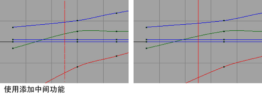
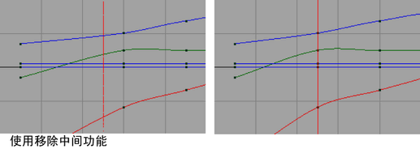

中间帧提供了一种方法，通过添加或移除一帧或时间单位来调整动画计时。关键帧和受控关键点保持它们的切线特性，从而对现有动画曲线的更改减到最小程度。请参见设置中间帧。
注： 可以使用一些运行时命令来创建用于创建中间帧的键盘快捷键。对于
曲线图编辑器(Graph Editor)，命令为
“曲线图编辑器”(Graph Editor)“添加中间帧”(Add Inbetween)和
“曲线图编辑器”(Graph Editor)“移除中间帧”(Remove Inbetween)，对于
摄影表(Dope Sheet)，命令为
“摄影表”(Dope Sheet)“添加中间帧”(Add Inbetween)和
“摄影表”(Dope Sheet)“移除中间帧”(Remove Inbetween)。有关如何使用键盘快捷键触发命令的详细信息，请参见
为命令指定热键。

